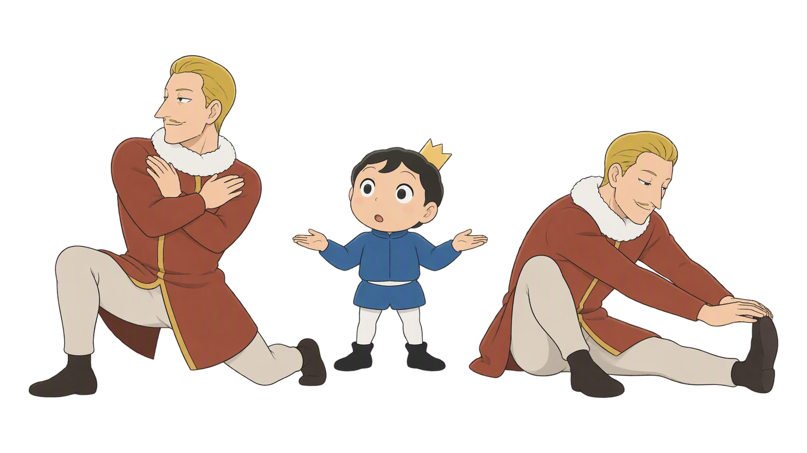
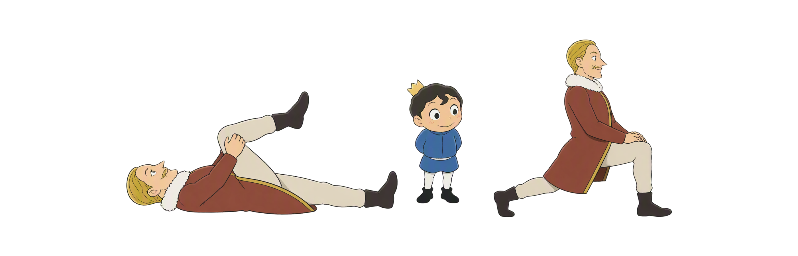
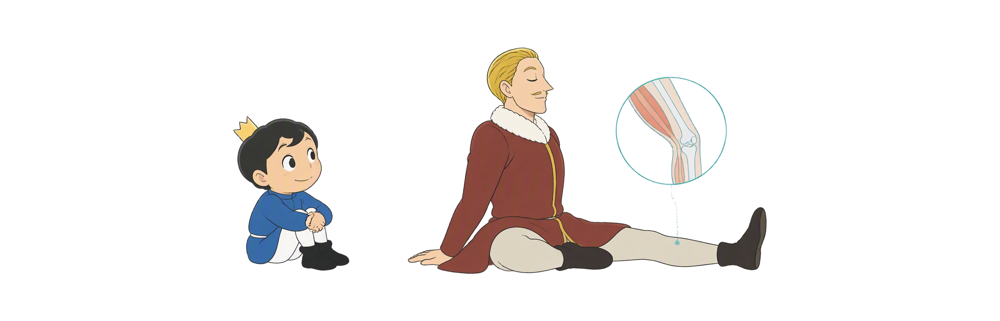
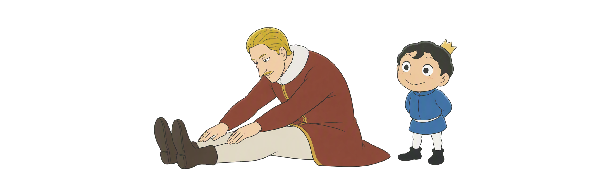
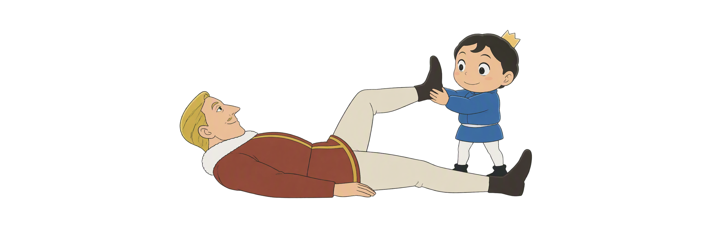

Day 45
训练前后怎么拉？
前动后静 · PNF先沟通 静态 × 动态 × CR／HR／CRAC
静态与动态PNF三法可控无痛

前动后静 · PNF先沟通 静态 × 动态 × CR／HR／CRAC
六个入口区分范围、时机和PNF流程；每一步都以主动控制、舒适感觉和清楚停止信号为先。
保持范围 · 主动通过
张力与保护 · 不等于痛
训练后 · 15–60秒
训练前 · 能停住
CR／HR／CRAC · 温和收缩
有异常 · 立刻停
图示用于理解时机与动作关系；疼痛、麻木、头晕、明显不稳或急性损伤时停止，并按需要咨询专业人员。
用“仰卧抱大腿”和“弓步转体”比：一个停住，一个主动通过。看你是在训练前准备，还是训练后放松。

坐姿伸腿前屈时，后侧“紧”不只来自肌肉；先分清轻牵拉、保护性紧缩，和该停止的疼痛。

例子就是“坐姿伸腿前屈”：练完腿后慢慢前倾到后侧轻牵拉感，保持15–60秒。

从小范围主动开始；每一下都能停住，再接徒手或轻负荷专项动作。
PNF是“本体感觉神经肌肉促进技术”。都以腘绳肌拉伸为例：伙伴只稳定，不把腿压到最大范围。

GTO与自生抑制是理解收缩后放松的线索；先约定口令和停点，异常症状立刻结束。